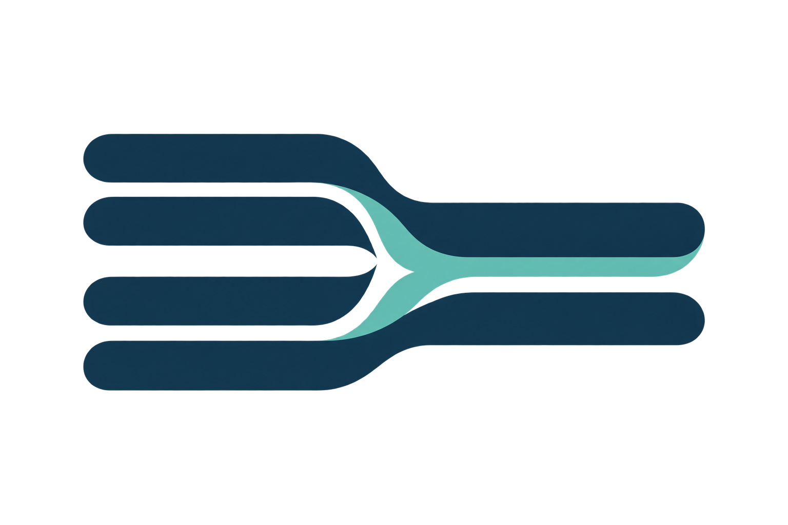
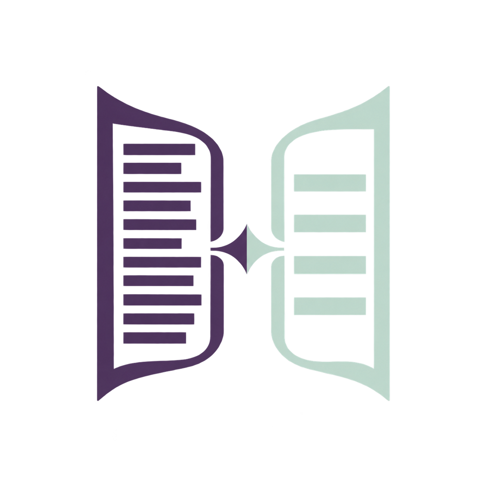
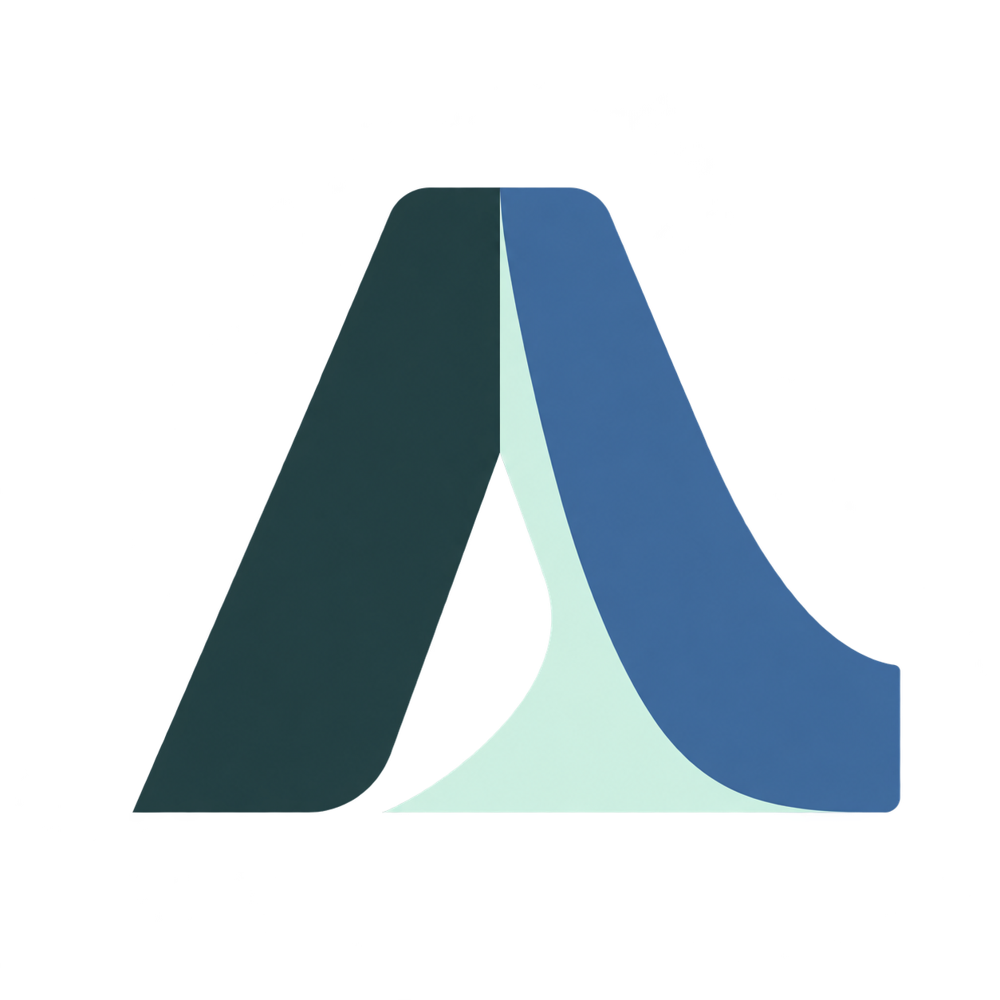

01 / Folded source
Open the document
A document opens into a clearer reading.
Palette
#075A57 · #CFEFDF · #F7F4EC
Each mark explores the same task: make a long study document easier to read while keeping its source close.
A document opens into a clearer reading.
Palette
#075A57 · #CFEFDF · #F7F4EC

Dense lines resolve into a shorter reading.
Palette
#17364A · #62BFB3 · #F7F4EC

The original and explanation stay side by side.
Palette
#4D3B62 · #BFD8CC · #F7F1E8
One important passage is marked in context.
Palette
#153F3B · #B65E43 · #D0F0DC

Two unfolding pages form an A monogram.
Palette
#243F42 · #416B98 · #CFEFDF